GWENDOLINE KAM
ABOUT
PRESS
WORK
金 佐 寧
關於
媒體
作品
3/8
乔治·贝克：摄影的扩展场域
Photography’s Expanded Field
乔治·贝克（George Baker）
金佐宁、徐旷之 译
戴菲 审校
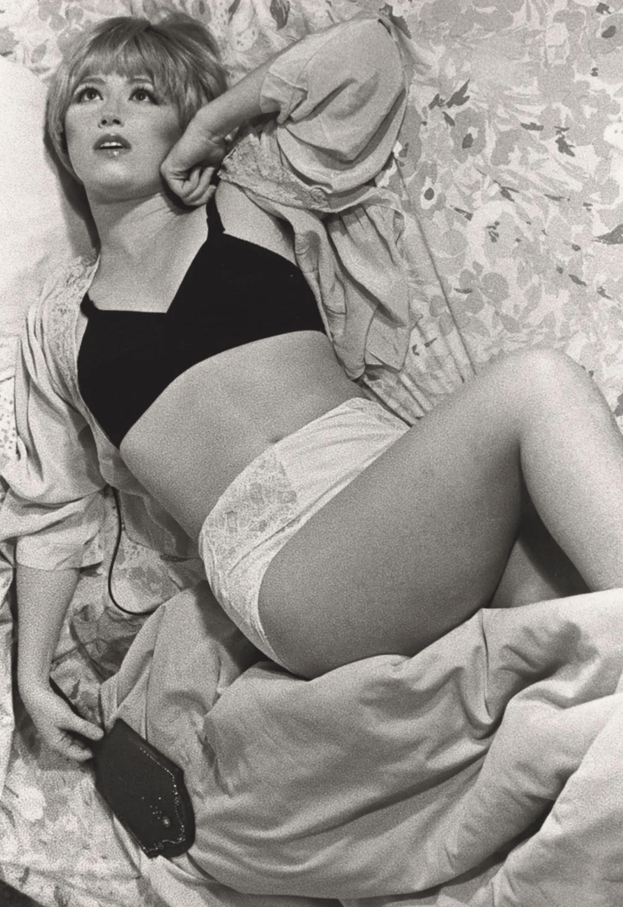
我选择以屏幕而非底片或照片，开启本文。在这块屏幕上，你可以看到一派校园风光，有着标志性的欢愉氛围和令人印象深刻的野兽派建筑。当观者的视线随动态屏幕滚动，变化中的建筑物和当地民众便如巡游一般，接踵而至，跃入眼帘。在这些移动的人群中，有各式种各样的年轻人、或放荡不羁或循规蹈矩的学生、未来的教授、保安人员和警察。摄影镜头亦同时捕捉到伫立于人们身旁那一辆又一辆丧失动力，被严重毁坏的汽车。这样的画面结构，显然是对摄影及电影史上两个重要时刻的致敬，它们分别是安迪·沃霍尔（Andy Warhol）在“Death in America”系列中对灾难照片的使用，以及让·吕克·戈达尔（Jean Luc Godard）在电影《周末》（Weekend，1967）中那段声名远扬的长达八分钟的跟拍车祸长镜头。然而，若图像中的汽车和人物均处于静止状态；被毁坏的客体和那些面无表情的主体，只是在无穷无尽的滚动中掠过，从而构成一条循环流动的条带，在接踵而至的偶然事件中被反复打断，这是一场从始至终不断往复的革命。实际上，我们谈论的这幅不可思议的静态影像作品，南希·达文波特（Nancy Davenport）的《周末校园》（Weekend Campus，2004），是由摄影师将一系列扫描过的摄影静态图像拼接而成的。在最近一个以数码摄影为主题的展览中，这幅作品被放在了一进门口的位置。[1]
环视现今的当代艺术世界，我们不难发现摄影这一客体（photographic object）正深陷危机，或者至少处于剧烈的变革漩涡之中。诚然，摄影史与理论的再阐述已经作为一种不可或缺的智力必需品、一项艺术史事业存在已久，这源自20世纪70、80年代摄影在艺术实践中获得了崭新的重要性。在这一时期一系列艺术实践曾围绕着摄影特质进行重构，因此后现代主义，正如被理论化的那样，几乎可以被描述为一次摄影事件，罗莎琳·克劳斯（Rosalind Krauss）将这样的摄影称之为“理论对象（theoretical object）”：艺术作品屈从于摄影的复制逻辑，抵抗原创作者和风格等规范概念，根植于大众文化形态，执迷于指涉性（referentiality）以及戳穿审美自主性。[2]然鉴于后见之明，我们或可说，在后现代主义兴起之际，摄影理论和实践那刹那的盛极非凡，如今看来就如这种媒介的最后喘息，是夜幕降临前的黄昏余光。在过去十年间，被理论化的摄影客体已全然让步于数字化再编码，我们甚至可以毫不夸张地说，当代艺术世界亦已迈步于电影转向，而非摄影。
相较于25年前克劳斯在《扩展场域中的雕塑》（“Sculpture in the Expanded Field”）一文中所描写的年代，我们现身处的时刻可谓与之截然不同：批评家曾经猛烈抨击的灵活性以及“无限延展（infinitely malleable）”的媒介范畴，似乎并未困扰当下的我们。[3]而关键的共识在于，我们今天所面对的，已不再只关乎将一切基于图像的事物视为摄影的问题，而是摄影本身已经被排斥、丢弃甚至因技术过时和审美转变而遭到舍弃。在当今的摄影领域，艺术家如杰夫·沃尔（Jeff Wall）那样的明星人物，会将摄影与历史绘画等相对老旧的媒介相结合，从而神奇地逆转了此前摄影对传统艺术媒介所作的报复式取代；又或如安德烈·古斯基（Andreas Gursky）那样，他们会欣然接受摄影数字化所拓展出的崭新尺度与技术。（这并非在回绝其他方面的可能性：事实上，沃尔亦同时拥抱数字化，而古斯基本身也是一位画意摄影师。）再者，即便是年轻一代中最为传统的当代摄影师，他们亦难以在自身的实践之中，抗拒融入其他媒介的冲动；而比起用摄影来重塑其他实践，他们更倾向于反过来重塑摄影本身。比如菲利普-洛卡·迪科西亚（Philip-Locra diCorcia）在他的街头摄影作品中，以剧院或影院的舞台灯光作为照明光源，或是托马斯·德曼（Thomas Demand）在现有的创作里，运用同样带有模拟性质的投影，来配合播放他编程的拟真摄影（photographic simulacra）。而莱涅克·迪克斯特拉（Rineke Dijkstra）则觉得有必要将她拍摄的肖像视频与影像字幕（photographic inscriptions）并置在一起。但即便对那些依然以某种形式延续摄影实践的艺术家而言，这种媒介在今天也似乎只是一种可悲的权宜之计，它并不足以成为通往其他更为引人入胜、扣人心弦的形式的桥梁。
「碎鏡的流動：界限感知中重寫『現代性』」展覽現場
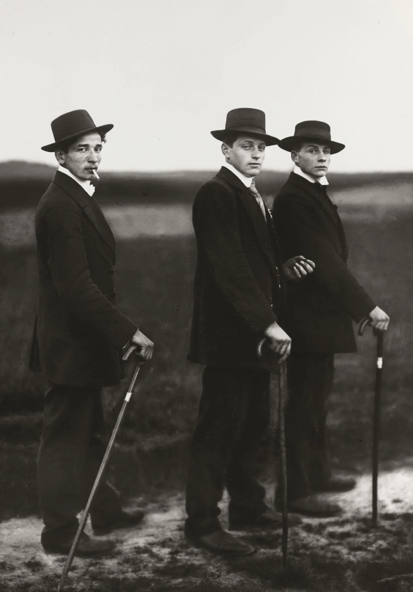
然而，在我开头提及的达文波特的作品中，却蕴藏着一种不寻常的踌躇，使我从摄影没落的终极判断中退步。我们该如何描述这件作品在运动与静止之间所表现的那份犹豫，描述它在面对技术进步时，那份固步自封的执着？以及它将静止之物串联为运动，它对电影和摄影的双重执著？我试图探究的，正是这种面临融合或分裂两难时的犹豫和挣扎。虽然摄影媒介于今天已貌似被彻底改变，而传统的摄影客体形式亦在众多更为先进的艺术实践中显得逊色，但其效应或许正以一种崭新的、改头换面的形式幸免于难（survives）。假若我们能够抵抗批判和描述中那种束缚客体的形式，并拒绝媒介纯技术性消亡的宣判，或许，我们就能批判性地想象，摄影客体在当代艺术实践中是如何被“重构”的。这种实践，是当代艺术形式中不可或缺的批判性想象行为，但并非对技术诠释及传统形式主义标准的回应。
如罗兰·巴特（Roland Barthes）多年前所述，客体的“重构”应是结构主义者所肩负的使命，而这正是25年前克劳斯在其《扩展场域中的雕塑》中所展现的批判姿态。[4]在摄影转向似乎不再于后现代主义理论中占据主导地位的今天，来自那个时代的另一种解释策略，即作为开启文化及美学“扩展场域”实践的后现代主义概念，则变得越发有用。[5]但让我震惊的是，据我所知，后现代主义扩展场域的解释模型，并未曾应用于探索25年前摄影实践所经历的转变，而在审美后现代主义早期，这一转变却被批评家接二连三地视作摄影事件。毫无疑问，像阿比盖尔·所罗门-戈多（Abigail Solomon-Godeau）一类的写作者，他们在吸收克劳斯的关键性论述后，将后现代摄影形容为一个迈向“扩展”而非“收缩”的实践场域，但对这种扩展的精确定位和描述却从未被尝试过，也从未被具体想象过。[6]假若摄影客体在今天无法挽回地离我们而去，那么我们就需要深入并探索宣称摄影所拥有的扩展场域到底意味着什么；我们需要追溯在过去二十年间，这一场域对于摄影实践来说究竟意义何在，以便准确定位我们自身与假定的扩展之间的关系——无论是忧是喜——这都是摄影媒介在当下正在经历的。
也许，摄影众所周知的在认识论上的难以捉摸——试想罗兰·巴特的《明室》(Camera Lucida，1980) 通篇所面对的著名难题，即以笼统的方式定义他所分析的对象——本能地抵制着克劳斯就扩展场域所提出的结构性秩序和分析。事实上，摄影的扩展场域，不同于雕塑，它或许更应被想象成一组扩展场域，具有多重对立和共轭（oppositions and conjugations），而非任何单一的操作。然而，让人诧异的是，摄影批评家却始终如一地以对立思维的修辞来探究摄影，无论是我们将摄影置于本体论与社会运用之间，还是艺术与技术之间，或是巴特所称的外延（denotation）与内涵（connotation）之间，再或是他后来称之为知面（punctum）和刺点（studium）之间，以及“话语与文献”[运用本雅明·布赫洛（Benjiamin Buchloh）所发明的概念]，“劳动与资本”[使用艾伦·塞库拉（Allan Sekula）的理论之一]，指示符（index）与像似符（icon）、序列与系列、档案与艺术摄影之间。例子不胜枚举。
摄影在两极对立中的撕裂，正是我们为其实践勾勒扩展场域的基础所需，而上述任何一种对立关系，实际上均可成为该场域的根基。我在首篇发表的艺术史论文中，针对这些对立组合，提出了自己的反对意见，这是一个再普遍不过且有悖直觉的反对意见，但意在涵盖前文所论及的诸多术语，自媒介发明以来，摄影史及实践正是在这些方面一直处于停滞状态。在另外一篇专门分析奥古斯都·桑德（August Sander）的摄影文章中，我提出了何时我们将不可避免地将摄影视为叙事（或我称之为“叙事性”）与静止之间撕裂的疑问。[7]这个问题无疑是违反直觉的，因摄影图像的完全冻结，以及它对凝固或静止的执著，似乎已经让许多人认为那是摄影媒介的所有特征。但至20世纪初，我们已无法忽视摄影在社会各方面中的运用：它对语言标题的屈从，应用于档案汇编、作为历史和日常生活真实状况的重要参照，以及带有序列与系列的审美编排，均在极力把摄影能指（signifier）推向运动，令其与叙事（diegesis）的交际功能结合起来，从而展开不可避免的话语（discursivity）。因此，即便彼时我所提出的反对意见是违反直觉的，但也是合乎逻辑的；在一个相互矛盾的场域中，运动与静止彼此对立，同时还可能涉及时间与空间维度本身。
「碎鏡的流動：界限感知中重寫『現代性』」展覽現場
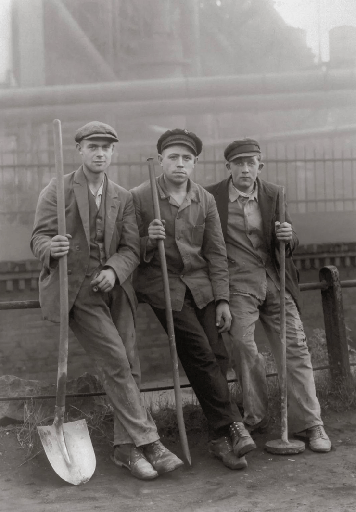
「碎鏡的流動：界限感知中重寫『現代性』」展覽現場
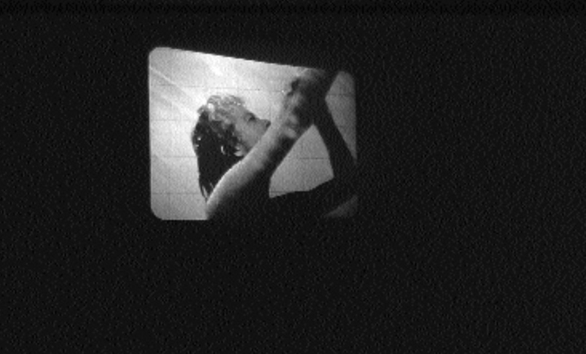
「碎鏡的流動：界限感知中重寫『現代性』」展覽現場
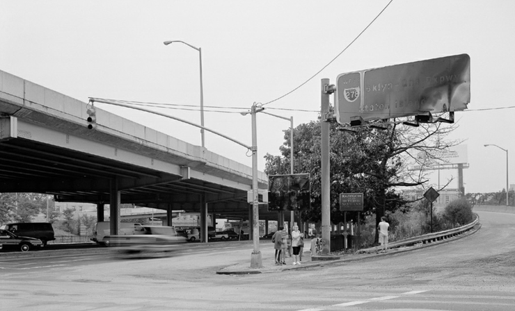
就桑德的个案而言，“叙事与静止间的摄影” 这种美学撕裂的状态，可以从极端现代主义（high modernism）时期的新客观主义 (Neue Sachlichkeit) 美学当中分离出来，这种分裂发生在桑德肖像档案汇编的叙事维度与类型的重复性（通过系统和连续安排相同的姿态、样式和类型不可避免地冻结自身的叙事）之间。虽然桑德在他的摄影作品中注入了一种叙事学的，甚至是文学的“噪音”，这可能会被视为新客观主义反现代主义的一个标志，但是他的作品却打破了连贯叙事的每一个主张，同时打破了对摄影的停滞或静止的执着，这使得上述判断变得更为复杂。对于20世纪的摄影来说，这种从未被注意到的状态正逐步变得无法回避。巴特虽然曾一直希望将电影等叙事艺术从摄影的瞬时性中分离出来，但他却一直未能确定是否真的存在一种独特的摄影“特质（genius）”。而在他最为振奋人心的一篇批评文章中，依然无法将电影和摄影彻底分开。因为当他试图从爱森斯坦（Eisenstein）的系列电影中寻找属于电影艺术的“特质”时，他仍然毫无疑问地将所有注意力倾注于电影剧照上，志在[于《第三层意义》（“The Third Meaning”）一文中]在其中探明“电影的（filmic）”矛盾本质。在《明室》中，所谓的摄影“特质”最终被证明是摄影自身的创造，巴特开始称之为摄影的“刺点”，一种向前运动却同时游离于图像的摄影“盲区（blind field）”，这原本是他早年在书中为电影媒介保留的特性。
如今，正是这种在叙事运动和静止停滞之间撕裂的摄影语言, 或可被视为现代主义摄影的整体性结构条件。这是一种既适用于前卫派艺术家，也适用于回归秩序 (retour à l’ordre）的艺术家的条件，在这种条件下，苏联模式构建的照片档案 [罗德钦科（Rodchenko)]与农业安全局所遗留的摄影文献 [沃克·埃文斯（Walker Evans）]具有同等重要性。它困扰着现代主义艺术家创作视觉传达媒介的每一次尝试，以及为此而设计的各种序列和说明性方案。它同时困扰着现代主义中其他摄影学派的每一次反击意图，他们试图发明各种模式来抑制摄影的指涉性，并将摄影图像引向一种更为纯粹、单一的视觉静止状态，然而，这种静止是媒介史上任何现代主义摄影都无法实现的状态和逾越的限制。如此，摄影的现代主义惯例——我们可以称之为摄影的修辞（rhetoric）——似乎导致了如桑德作品中出现的普遍的双重否定状态。现代主义摄影似乎被搁置在“既不/也不”的范畴中：它要么是那样一种客体，试图产生叙事性交流，却被媒介自身的静止力量所中断，要么意味着创造一张静态图像，但是却无法避免摄影内在的围绕着外延和内涵展开的斗争。换句话说，我们正在处理摄影术语中意义（meaning）及其结构的问题，但就这个问题，摄影理论却偏偏只强调摄影技术的转变，甚至强调以某种形式主义或现象学的方式描述图像。然而，事实证明这是盲目的；而针对上述问题，结构主义的经验或许依然有效。
实际上，另一种能较为清晰地概括现代主义摄影的结构条件之方法，是将其描述为一种悬置于既非叙事也非全然静止的状态；对于现代主义摄影而言，图像自相矛盾地同时拥有非叙事（not-narrative）及非静止（not-stasis）的功能。由此，我所使用的术语将呼应克劳斯在《扩展场域中的雕塑》中所探索的共轭逻辑。对于克劳斯而言，（现代主义）雕塑已成为景观之中的非景观，又或是建筑之中的非建筑。因此，正如她为“非景观”和“非建筑”的现代主义雕塑所构建的对立关系一样，将现代主义摄影描述为悬置于非叙事与非静止之间，具有让人无从抗拒的魅力。因为这些两两一组的术语，如“景观”及“建筑”，通向我们所说的“被建构（built）”（或构造）和“非建构（non-built）”，其中叙事意味着摄影的文化维度，而静止则是不加思索的“自然”（接近巴特的术语“内涵”和“外延”）。长久以来，后现代主义理论本身一直围绕着自然和文化间的对立而展开。在摄影史上，这种对立似乎可以被理解为摄影中的非叙事与非静止间的撕裂状态，而这种对立的逐渐缓解，标志着后现代主义摄影的来临：这是对上世纪70年代叙事功能、各种形式的纪录片，以及摄影作品的多种话语框架及增补所作的重新评估。
在《扩展场域中的雕塑》一文中，克劳斯利用数学家克莱因（Felix C. Klein）或结构主义者皮亚杰（Jean Piaget）的组群模型来开展她所建构的对立逻辑。我将在这里套用她的术语和她使用这种结构的方法。如果现代主义摄影以某种方式悬置于两种否定之间，即既非真正的叙事，亦非静止的意义效果之间——如果现代主义摄影已是一种排斥的总和——那么否定术语的对立便可轻易产生一种类似的具有正面表达的对立关系。“也就是说”套用克劳斯的话来说，“根据某种扩展的逻辑，‘非叙事’只是表达‘静止’的另外一种方式，而‘非静止’则是纯粹的‘叙事’。[8]”克劳斯所参考的克莱因扩展群, 将由二元组合转化“成为一个四元场域，这既映现着原来的对立关系，亦同时将其打开。”[9]对于现代主义摄影而言，该扩展场域可展示如下：
「碎鏡的流動：界限感知中重寫『現代性』」展覽現場
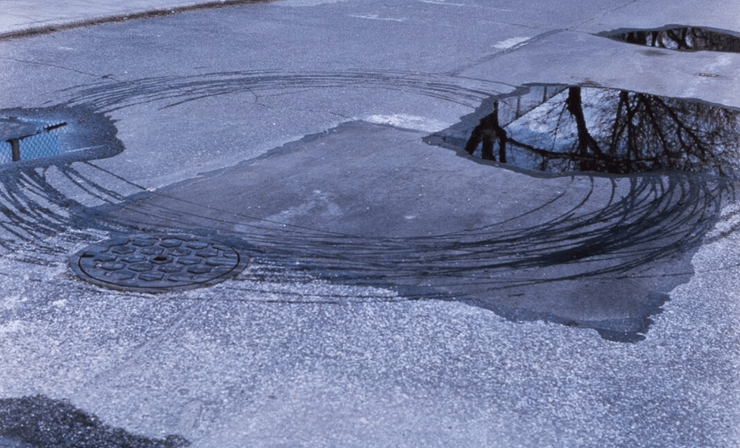
「碎鏡的流動：界限感知中重寫『現代性』」展覽現場
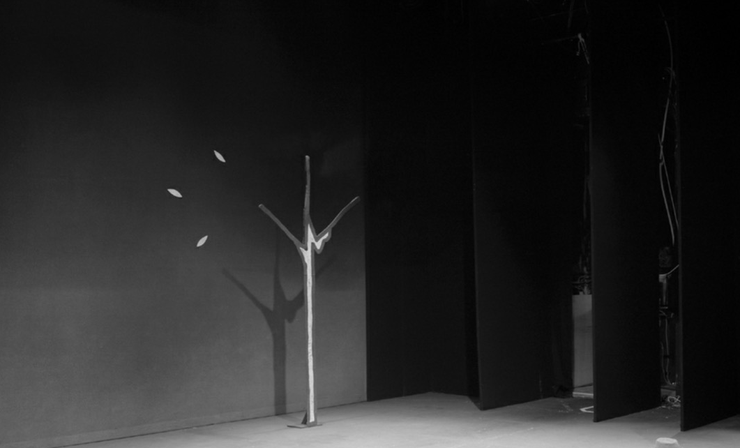
「碎鏡的流動：界限感知中重寫『現代性』」展覽現場
自与罗莎琳·克劳斯首次碰面至今，我一直在勾画克莱因四元群和语义方阵。如此一来，读者或许不会感到惊讶，大概在十二年前，我坐在克劳斯的办公室中，沉迷于为性别（gender）与性征（sexuality）等一类语义中性之物建立连接。而大约三年前，当我第一次绘制这张特殊的图表时，我其实一开始并不确定何种新形式能与现代主义摄影的扩展场域相对应，特别是当后者及其特定媒介的真实性已不再是居于主导地位的术语，而只是一个被取代部分。然而，在我开始思考自70年代中后期现代主义结束以及观念艺术等运动使摄影的前卫性手段合法化以来，摄影在这些最重要艺术实践中的主要作用时，这张图表当即变得让人信服。
首先，让我印象深刻的是，所谓的“图像”一代艺术家[道格拉斯·克林普（Douglas Crimp）的术语] 如何突出地运用摄影，他们经常将摄影视为更广阔领域的自我意识的碎片，其中最具说服力的例子，无疑当属辛迪·舍曼（Cindy Sherman）的无题“电影剧照（film stills）”。这些作品是摄影图像，但关键在于，它们拒绝自称为照片，这便将静态图像开放给一个由符码（code）和其他力量构成的文化场域，我称之为非静止。然而，就在同一时间，我们可以看到后观念对于投影图像的利用，例如在1970年代，詹姆斯·科尔曼（James Coleman）直接基于叙事电影创作的《盲点》（La Tache Aveugle，1978-90），将电影的运动形式冻结为静止的图像，并以长延时的方式投影；或最终将电影冻结为一般意义上的一连串持续投影的静止图像[《无题：菲利普·瓦谢尔》（Untitled: Philippe VACHER，1990]；又或，在科尔曼最具特色的创作模式中对幻灯片投影和诗意画外音的运用，这些画外音的叙事情节不断地被我称之为非叙事的冻结的摄影力量所中断[正如投影图像“三部曲”，《背景》（Background）、Lapsus Exposure和INITIALS，这些作品虽然创作于20世纪90年代初，但与科尔曼在20世纪70年代初至中期完成的项目有关]。[10]至此，我的四元群中的两个扩展——叙事与非叙事、静止与非静止——得到了说明，同时解释了存在于舍曼和科尔曼作品之间那种不可思议地既联系又对立的关系，这个问题一直在逻辑解释层面上困扰着我。或许更令人费解的是，结构主义者会将我图表中“复杂”的坐标轴，称为现代主义摄影的反向表达，是一种排斥的总和，既非中性状态下的叙事，也非静止。若将这种排斥倒置，并拒绝将一件作品定义为非叙事与非静止间的悬置物，而是将这两个术语重新组合，同时涉及叙事和静止，这又将意味着什么？当然，即便“摄影”这个媒介特定的术语在今天显然需要被重新审视，但舍曼和科尔曼在70年代末期宣称摄影的新用途时，他们依然有着相当令人信服的逻辑对应物；如果说舍曼创造了“电影剧照”，而科尔曼创造了“投影图像”，那么杰夫·沃尔在同一时期挪用广告灯箱的形式以展示他的图像，则发明了又一种主要形式，现在我们的扩展领域似乎完成了。
批评家们经常好奇沃尔图像中的模仿操作，以及他对历史绘画的再造，但同时也将其审美观贬损为对“叙事画（talking picture）”的虚伪复兴。[11]我们现在也可就这些疑问作出相关回应，因为沃尔的美学策略在摄影扩展场域复杂的坐标轴中占有一席之地，他的实践是现代主义实践逻辑的直接反转，与之相对，在科尔曼和舍曼的对立作品中，现代主义在遭遇破坏或否定的同时至少获得了部分间接地延续（其中一个是非叙事，另一个则是非静止）。因此，两位艺术家在间接背离现代主义的同时，亦成功地延续了现代主义的关键希望；而另一位则简单地颠倒了现代主义的条件，允许现代主义的意识形态排斥在免受干扰的情况下大放异彩。[12]
我现在很清楚，面对过去十年间的艺术，与其像批评家习惯的那样，倾向于谈论辛迪·舍曼对年轻一代摄影师的“影响”，又或是科尔曼或沃尔对当代艺术的“冲击”，不如说我们更应追溯一种前媒介的扩展场域的生命及潜在转变。相对于“作者”和他们所带来的影响，我们现在更需要处理的是新形式与各种文化可能性的结构场域。所有这些都在摄影媒介的扩展中得到了合乎逻辑的认可。
后现代主义“摄影师”三巨头在70年代末所占据的地位，本身便已促成近年普遍所见的新兴形式。而到了90年代初期至中期，利用摄影的一代艺术家开始探寻静止与非静止的可能性，拥抱这种由摄影行为本身所赋予的、可被称之为“反在场（counter-presence）”的冲动，习惯性的将静止的图像推向一个集多重社会层次与不完整的图像碎片于一身的场域。如今看来，对当代艺术中所谓的“电影剧照”或我称之为“电影式摄影（cinematic photograph）”的追捧和青睐，显然不是简单地（tout court）终结摄影，而是将其术语扩展到更全面的文化领域。[13]因此，我们正见证了一张单一的静止图像其内涵符码的疯狂增殖[90年代的作品中，最引人注目的是莎伦·洛克哈特 (Sharon Lockhart) 的摄影，她的系列作品，从《肖恩》（Shaun）到《御所ケ丘》（Goshogaoka），通常都与同期拍摄的电影项目相关]；或是静止图像对运用来自其他文化领域的手段持开放的态度[例如丹麦艺术家约阿希姆·科斯特（Joachim Koester）在致敬前人的系列《日以作夜，克里斯蒂娜》（Day for Night, Christiania）中采用了导演弗朗索瓦·特吕弗（François Truffaut）普及的蓝色滤镜，又或是挪威艺术家克努特·艾斯丹姆（Knut Åsdam）在城市住房项目的夜间档案中运用到了科幻小说的手法]。艾斯丹姆的后期作品，既被呈现为一系列开放式的摄影照片，同时值得注意的是，也被重新组合成幻灯片投影，它们呈现的顺序及叙事的可能，将影响艺术家随后耗时制作的半叙事电影。
因此，在这个扩展场域内，非凡突出的艺术家如今占据着相互对立且相当不同的位置。比如使洛克哈特变得众所周知的，不仅仅是她制作的电影式摄影，而且还包括一系列如《亚马逊剧院》（Teatro Amazonas）那样近乎静止的电影，我们可称之为“定画影片/静态电影（still film）”[14]，而非“电影剧照”。与此同时，在90年代中期，定画影片及各种形式的投影图像开始表现出叙事与非叙事的特定组合，并带来了各种可能性。在过去十年间，投影幻灯片的排列方式吸引了一批全新的追随者，其中一个例子是我刚刚提到的，与我的场域另一方面相关联的艺术家，即约阿希姆·科斯特，他利用被开发者废弃的幻灯片来创造短暂即逝的叙事 (例如Set-up [1992])。场域内的每个位置都将创造出新的形式。塔西塔·迪恩（Tacita Dean）的冻结式电影可能会和洛克哈特的作品一起占据叙事和非叙事的位置，迪恩将大部分实践都投入到静态摄影中，就像摄影师洛克哈特对电影的投入一样。而道格拉斯·戈登（Douglas Gordon）的“放缓（slowed）”电影——在最极端的版本中，电影的播放时间延长至24小时甚至几年，他将叙事电影作品简化至静止画面——将和洛克哈特的《亚马逊剧院》一样，占据“定画影片”的位置。而即便一件作品依赖视频，而另一件依靠电影方式呈现，两者实际上在观念上都与摄影的扩展场域相关联，不过，它们并不相互对应。
“叙事画”或摄影场域中的复杂坐标轴——叙事和静止的融合——涵盖了近年来最为多样的解决方案，包括从数字蒙太奇的绘画操作（从沃尔到达文波特及其他），到格利高里·克鲁德逊（Gregory Crewdson）学派大尺幅的好莱坞式的画面[即安娜·盖斯科尔（Anna Gaskell）、贾斯汀·库兰 (Justine Kurland) 等人]，再到安德烈娅·罗宾（Andrea Robins）+马克斯·贝歇（Max Becher）组合和爱尔兰艺术家杰拉德·拜恩（Gerard Byrne）等众多不同艺术家摄影作品中对图像最无节制的补充，我将这种发明称之为“叙事说明（narrative caption）”。[15]除了数字重新编码及语言补充之外，新形式也会由此诞生，即便仍以模仿为主：也许大家会想到萨姆·泰勒-伍德 (Sam Taylor-Wood) 的《变革的5秒钟》（Five Revolutionary Seconds）或《独白》（Soliloquy）系列，这些全景静态摄影复现了历史画的面貌，它们由一种特制的相机拍摄，它可以随着时间的推移和空间的变换而转动。而且这些作品在展览的时候，经常配有悬挂于墙上的语音解说播放器。[16]至此，一幅图像的“有声”状态似乎已趋于极致，而错综复杂的坐标轴，两者兼具的融合，可能再次呼唤着新的颠覆（对“不”的否定）。
因此，我最后一次套用克劳斯的话，“‘摄影’再也不是它所对立的两种东西之间的那个被特别看待的中间项。‘摄影’只不过是场域边缘的一个术语，在这个场域内，其他不同结构的可能性亦同时存在。”[17]这是一个文化场域，而不仅仅是审美场域，这一点似乎有被遗忘的潜在危险，而最近再次出现了强调客体边界（object-bound）的媒介特异性的观念。这是克劳斯扩展场域最重要的教训之一：现代主义的媒介特异性并非只简单地消散至什么都可以的多元化状态之中。相反地，这些媒介会非常精确地扩展，并标志着一场策略运动，由此艺术和世界，或者说艺术与更为广阔的文化领域，将以全新的、此前无法想象的关系站在一起。顺势而思，诸如皮埃尔·于热 (Pierre Huyghe) 这样的艺术家便浮现于我的脑海。他的摄影和投影作品，从本质上讲，都可以被视为其扩展形式及这些形式所参考的文化领域之间的中转站；在于热的作品中，后现代主义对再现符码（representational codes）的戏耍是在寻找一种形式，以便允许这些符码超越它们在一张图像、一帧画面中的位置，并重回它们不能再充分再现的现实或文化领域进行重新编码。这种文化的扩展是我觉得有必要复现扩展场域的模型，并在本文详细讨论摄影范围的原因之一。我并没有因克劳斯和哈尔·福斯特（Hal Foster）在新近的文章中提到媒介观念的回归而感到担忧——在克劳斯的作品中，这种担忧从未真正消失——因为这些批评家所试图探索的媒介观念，似乎与他们早期作品中所描绘的扩展完全一致（回望过去，《扩展场域中的雕塑》一文实际上相当于对后现代主义时期，媒介可能是什么所作出的深刻思考）。但这种对后现代主义和跨学科禁忌的打破，反而释放出了一系列对媒介特异性更为保守的呼吁，它们要求回归传统艺术的对象、实践及话语，对此我们必须予以抵制。
然而，问题并不在于“回归”到一个即使没有被扩展，但至少已经去中心化的媒介。正如福斯特在很久之前对克劳斯的文章所做的评论，当下首要的问题是要抵抗潜藏于后现代主义扩展场域模式背后的“再中心化（recentering）”冲动：在“扩展的场域”中，福斯特写道，“作品虽然摆脱了‘雕塑’这一术语......但却被其他术语如‘景观’、‘建筑’等约束。尽管不再被单一的法则所定义，但实践依然在一个场域内进行。去中心化，而后又重新被中心化：这个场域被（精确地）‘扩展’而非‘解构’，这种结构主义模型，正如克劳斯的文章所言......因此，‘扩展的场域’提出了一种被后结构主义质疑的文化对立逻辑，而且，这一逻辑似乎也遭到了后现代主义的质疑。” [18]这个问题现在也是我们的问题。如果说摄影客体在今天似乎处于危机之中，这可能意味着当下我们正在进入一个时代，摄影非但没有走向终结，扩展的场域也没有在扩散中完全崩溃，而是所涉及的术语变得更为繁复，为此我们更需勾勒出这些术语的效用，这皆因它们的影响并非显而易见，更莫说不言而喻。
如我此前所暗示，相较于本文匆忙勾勒的场域，摄影的其他扩展场域也许更具设想的可能性。我要指出的一个例子是，从路易斯·劳勒 (Louise Lawler) 和詹姆斯· 威灵 (James Welling) 到年轻艺术家雷切尔·哈里森（Rachel Harrison）、汤姆·伯尔 (Tom Burr)、 佐伊·伦纳德 (Zoe Leonard) 及加布里埃尔·奥罗斯科 (Gabriel Orozco) 等人的实践，我们也许面对着更为彻底的空间（而非时间）扩展[试想奥罗斯科的《反射的扩展》（Extension of a Reflection，1992） 或《柔软的石头》（Yielding Stone，1992）]。鉴于这些潜在的扩展，我们现在需要抵制当代艺术中来自传统客体和媒介的诱惑，就像我们需要竭力克制当前由所谓的“后媒介状态”所带来的失明和健忘症一样。诚如詹明信（Frederic Jameson）在后现代主义发展的早期岔路口所提议的，在当代时刻，我们需要的是不同的地图：我们不应从当代摄影实践的扩展场域中退却，反之，我们应该绘制他的各种可能性，但亦需解构潜藏于其中的封闭性，进一步打开它的多重逻辑。无论如何，当我为文首所提到的艺术家南希·达文波特第一次勾画我的图表时，她迅速地抓走我的笔和纸，开始朝着不同的方向画出盘绕的线条，围绕着我所建立的对立关系和四方形旋转。她的眼神彷佛在说：“那么，这些可能性又如何呢？”我的图表完全乱作一团。摄影师的线条，虽然围着场域旋转，但没有中心，它们向各个方向延展。
注释
[1]Nancy Davenport, Campus, Nicole Klagsbrun Gallery, New York, March 5 to April 3, 2004.
[2]Rosalind Krauss, “Reinventing the Medium,” Critical Inquiry 25 (Winter 1999). An expanded version of the essay is reprinted in James Coleman, ed. George Baker (Cambridge, Mass.: MIT Press, 2003).
[3]Rosalind Krauss, “Sculpture in the Expanded Field” (1979), in The Originality of the Avant-Garde and Other Modernist Myths (Cambridge, Mass.: MIT Press, 1985), p. 277.
[4]“一切结构主义活动，不管是内省的或诗的，是用这样一种方式重建一个‘客体’，从而使那个客体产生功能（或‘许多功能’）的规律显示出来。结构因此实在是一个客体的模拟、不过是一个有指导的、有目的的模拟，因为模拟所得的客体会使原客体中不可见的，或者你愿意这么说的话。不可理解的东西显示出来。”(Roland Barthes, “The Structuralist Activity,” in Critical Essays, trans. Richard Howard [Evanston, Ill.: Northwestern University Press, 1972], pp. 214–15，参考袁可嘉译本).
[5]安东尼·魏德勒（Anthony Vidler）最近在一篇关于当代建筑的文章中重新审视了克劳斯的模型；参见“Architecture’s Expanded Field,” ”Artforum 42, no. 8 (April 2004), pp. 142–47. 安娜·瓦格纳（AnneWagner）最近在一篇关于20世纪70年代雕塑的文章中对此进行了批评；参见“Splitting and Doubling: Architecture and the Body of Sculpture,” Grey Room 14 (Winter 2004), pp. 26–45.
[6]“继艺术摄影之后的摄影似乎是一个扩展而非收缩的场域”，参见“Photography After Art Photography,” in Brian Wallis, ed., Art After Modernism: Rethinking Representation (New York: New Museum of Contemporary Art, 1984), p.85.
[7]George Baker, “Photography Between Narrativity and Stasis: August Sander, Degeneration, and the Decay of the Portrait,” October 76 (Spring 1996), pp. 73–113.
[8]Krauss, “Sculpture in the Expanded Field,” p.283.
[9]Ibid.
[10]虽然科尔曼的“投影图像”（艺术家使用的术语）在90年代才被广泛认可，但他第一次使用幻灯片投影配以画外音最早见于70年代初期至中期，例如《幻灯片》（Slide Piece，1972）和《克莱拉与达里奥》（Clara and Dario，1975）。
[11]参阅Rosalind Krauss, “‘… And Then Turn Away,’”in James Coleman，pp.177-78, 183：“长久以来，模仿在后现代主义中的作用一直是一个特别值得理论关注的问题……自从我第一次观看沃尔的 《女人像》（Picture for Woman，1979）以来[对马奈《女神游乐厅的吧台》（Bar at the Folies Bergère）的致敬]，我对从结构上（structurally）解释他的作品便产生了兴趣。”本文探索的扩展场域似乎亦提供了这种结构性的解释。
[12]就这一主张而言，我对沃尔作品的描述将与迈克尔·弗雷德（Michael Fried）近日之主张截然相反。弗雷德将沃尔准确地定位于现代主义的传统，即作者在现代主义绘画中阐述的“专注性”和反剧场性的复杂谱系。例如可参见Michael Fried, “Barthes’s Punctum,” Critical Inquiry 31 (Spring 2005), pp. 539-74。
[13]诚然，沃尔在讨论他的作品时常使用“电影”一词。虽然摄影场域的所有扩展坐标轴都可通过将叙事性问题纳入摄影结构而向电影开放，但我们需要严格区分沃尔的电影图像及其衍生与我在这里所说的“电影式摄影”。虽然这类图像几乎不涉及“定画影片”或“投影图像”中实际的电影运动，但它们亦拒绝沃尔或格利高里·克鲁德逊等摄影师那种形式统一、浑然一体的图像形式。它们与电影的结合导致了对碎片、缺席、不连续，以及可被称之为“反在场”的特殊现象学的包容和接受。（所谓的“反在场”，我并不打算唤醒任何类似迈克尔·弗雷德的“专注性”或“反剧场性”等术语的回声，其实恰恰相反。）尽管如此，我们必须承认，沃尔的审美产物并非一成不变，他的许多作品，尤其是那些系列作品如《年轻的工人》（Young Workers，1978-83），几乎跟文中讨论的所有艺术家一样，位于摄影扩展场域的坐标轴之内，而不是他所说的电影。
[14]我相信这个术语是由道格拉斯·克林普创造的，用以解释在70年代出现的类似作品[他引用的例子是罗伯特·朗戈（Robert Longo）的一部电影]。见“Pictures,” in Art After Modernism, p. 183. 克林普在这篇1979年的文章中已经充分认识到电影剧照和定画影片的可逆性（这篇文章的写作时间与克劳斯发表《扩展场域中的雕塑》同年）
[15]不幸的是，拜恩的作品在美国仍不为人所知，请参见拙文“The Storyteller: Notes on the Work of Gerard Byrne”，in Gerard Byrne: Books, Magazines and Newspapers（New York: Lukas & Sternberg Press, 2003）。拜恩已拓展至利用历史广告及过时新闻文本和照片中“已发现的场景（found scenarios）”来制作一系列电影。
[16]与众不同的是，泰勒·伍德在推进此类摄影扩展的同时，还进行了“静态”视频和电影的项目。有关泰勒·伍德项目中摄影和投影之间的分裂，详情请参阅我对她2001年在巴黎国家摄影中心举办的展览的评论，“Sam Taylor-Wood,” Artforum 40, no. 4 (December 2001), p. 115.
[17]Krauss, “Sculpture in the Expanded Field,” p. 284.
[18]Hal Foster, “Re: Post,” in Art After Modernism, p. 195.
注：经授权转载自《世界美术》2024年第2期。
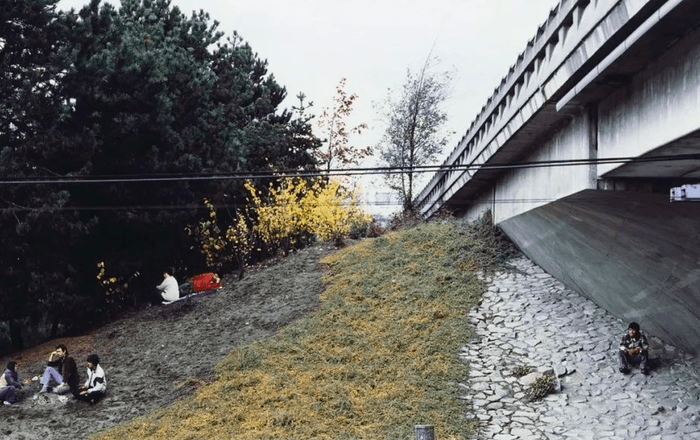
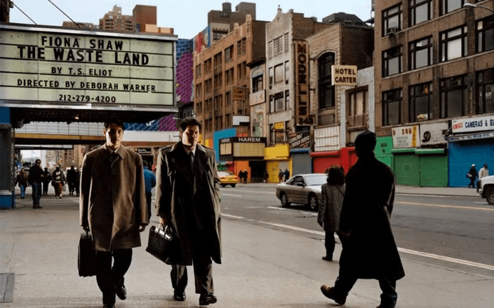
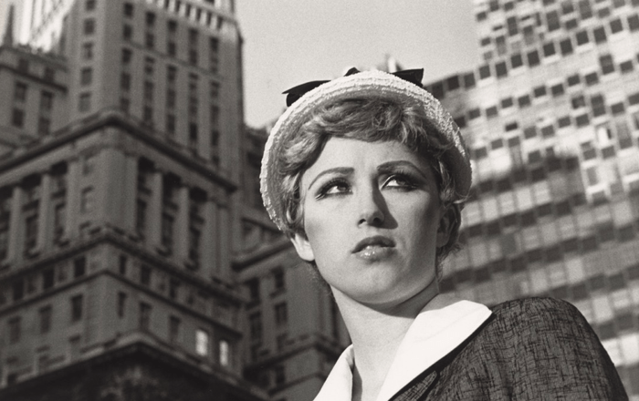
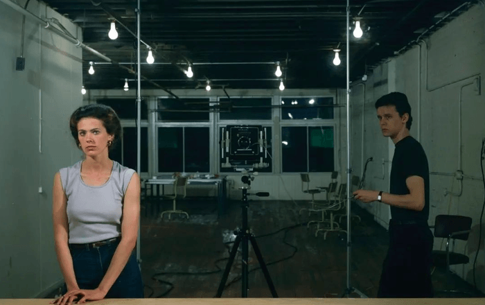
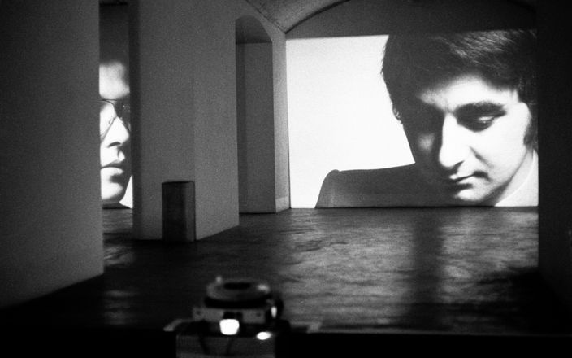
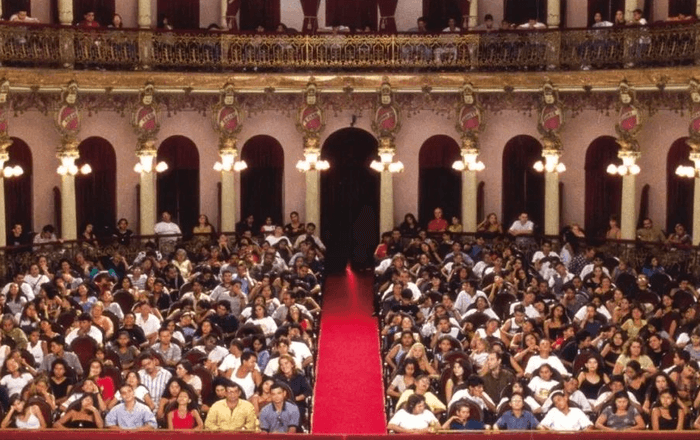
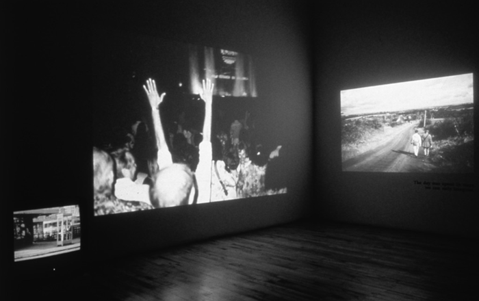
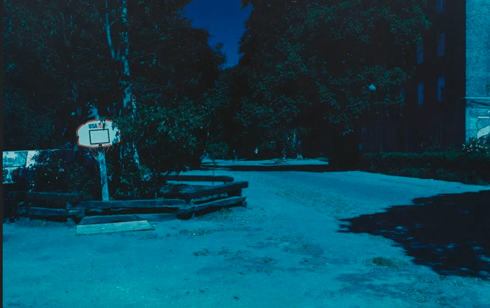